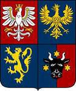

5716848975 Prinsessan Astrid Tryggvesdatter
Prinsessa av Norge. Blev ca 44 år.

Far:
Mor:
Född:
omkring 962 Ringerike, Buskerud, Norge. [1]
Död:
omkring 1006 Sola, Rogaland, Norge. [1]
Barn:
Personhistoria
962?
Födelse omkring 962 Ringerike, Buskerud, Norge
[1]
1006?
Död omkring 1006 Sola, Rogaland, Norge
[1]
Källor